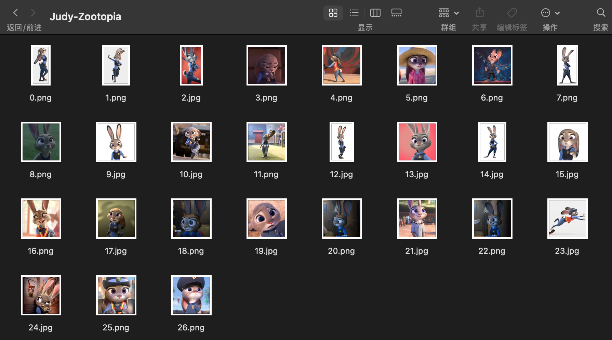
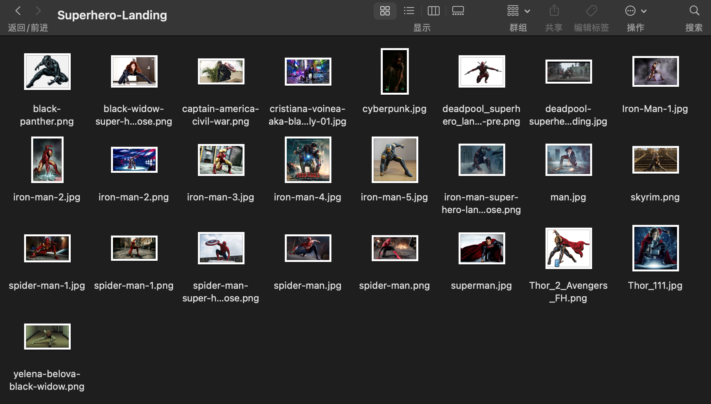
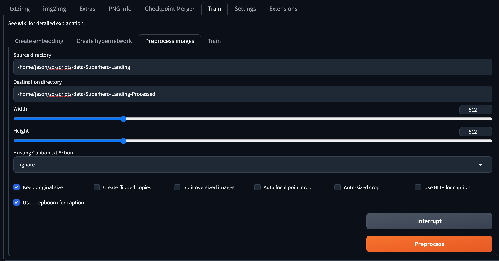

[Stable Diffusion]训练你的LoRA(Linux)
简介
LoRA 是一种参数高效微调方法（PEFT），最早由 LoRA: Low-Rank Adaptation of Large Language Models 提出并应用于微调语言大模型之中，后来由 Low-rank Adaptation for Fast Text-to-Image Diffusion Fine-tuning 引入到对 Stable Diffusion 模型的微调之中。LoRA 并不改变原模型的权重，而是在线性层旁边新增一个下采样-上采样的支路，通过训练这个支路来完成微调。因此，同一个基底 Stable Diffusion 模型可以搭载不同的 LoRA 使用，具有很高的灵活性。由于 LoRA 支路网络的参数量小，相比微调整个模型，对算力的需求更加友好，并且也能达到不错的效果，因此很快受到大家的热烈欢迎，成为了目前最流行的微调 Stable Diffusion 的方法之一。
网络上有非常多训练 LoRA 的脚本和 GUI 界面，B 站上也有很多视频教程，但它们大多是面向 Windows 用户和 GUI 用户。由于我本人使用的是 Linux，因此选择 kohya-ss/sd-scripts 在终端中使用命令进行训练。事实上，该代码库不仅支持训练 LoRA，还支持训练 DreamBooth、直接微调、训练 Textual Inversion 以及转换模型格式（ckpt、safetensors、Diffusers 格式互相转换）等，且训练出来的模型可以直接加载到 webui 中使用，是最广为使用的代码库之一（目前 2.2k stars）。由于该代码库的文档是用日文书写的，所以有人 fork 了一份并用 ChatGPT-4 将其翻译为了英文：英文文档链接. 本文有大量内容参考自英文文档。
特别说明：本文所用 sd-scripts 版本的 commit hash 为 c7fd336，后续代码更新后可能会出现与本文讲解不一致的地方。
环境配置
下载代码：
1
2git clone https://github.com/kohya-ss/sd-scripts.git
cd sd-scripts新建并激活 conda 环境：
1
2conda create -n sd-scripts python=3.10
conda activate sd-scripts安装依赖包：
先在
requirements.txt中把bitsandbytes==0.35.0改成bitsandbytes-cuda111==0.26.0.post2，然后：1
2pip install -r requirements.txt -i https://pypi.tuna.tsinghua.edu.cn/simple
pip install xformers -i https://pypi.tuna.tsinghua.edu.cn/simple代码库会使用 huggingface transformers 库集成的 CLIP 模型，但由于众所周知的网络原因，我们很可能在自动下载权重的时候卡住。为了解决这个问题，可以先手动把 CLIP 模型下载下来：
1
2git lfs install
git clone https://huggingface.co/openai/clip-vit-large-patch14然后更改
library/model_util.py文件：1
2text_model = CLIPTextModel.from_pretrained("openai/clip-vit-large-patch14").to(device) # 删掉或者注释掉
text_model = CLIPTextModel.from_pretrained('./clip-vit-large-patch14').to(device) # 改成这个再更改
library/train_util.py文件：1
2TOKENIZER_PATH = "openai/clip-vit-large-patch14" # 删掉或者注释掉
TOKENIZER_PATH = './clip-vit-large-patch14' # 改成这个改动这两个文件后代码就会直接加载本地下载好的模型而非去联网下载。
数据准备
准备数据是训练 LoRA 过程中非常重要的一环，甚至可能是用时最长的环节。数据质量非常重要，如果是人物角色，应尽可能多地包含各种角度、姿态和背景，否则模型的输出将过于单一。譬如，如果训练集里没有角色的背面，那模型自然也无法学会生成其背面。好消息是，15~20 张图片足以训练出一个还不错的 LoRA，所以人工检查训练集的质量并不是件难事。当然，在保证质量的前提下，数据肯定是越多越好。
为了训练 LoRA，sd-scripts 支持三种不同的数据准备方式：
DreamBooth, class+identifier 方法
第一种方法启发自 DreamBooth，不过只微调 LoRA 网络而非微调整个模型。这种方法会把一个特殊的词汇（标识符）与训练目标（人物/动物/物体）绑定起来，于是在使用这个标识符时就能够生成对应目标的图片。该方法不需要为每张图片准备文字描述，因此较为简单直接，但缺点是会将训练集中出现的各种特征硬编码进模型，缺乏灵活性。例如，假设要训练一个格温蜘蛛侠，由于素材图片中其头发都是（或绝大部分是）金色，所以模型会认为金发是格温的固有属性（换句话说，不是金发就不是格温），因此训练好之后想改变发色会比较困难。另外，该方法支持正则化图片来防止模型过拟合，例如，素材是我自己养的猫，那么正则化图片就是其他各种猫，防止训练之后模型在生成猫的时候只会生成自己的猫，不会生成其他猫了。
DreamBooth, caption 方法
该方法要求对每张训练图片提供对应的文本描述，因此准备过程比第一种方法麻烦一些，但可以将特征与目标解耦。例如，对金发格温的图片，我们在描述词中加入「金发」，那么模型就会知道金发是由文本描述决定的、而不是格温的固有属性，于是当描述词改成红发时，模型就会根据描述词去改变发色；反过来，如果希望生成的角色一定包含某种属性，比如蓝色眼睛，那么描述词中就不能有「蓝眼」，这样蓝眼才会与模型绑定起来。另外，该方法也支持正则化图片。
Fine-tuning 方法
文本描述需要提前收集到一个元数据文件之中，不支持正则化图片。这种方法对于训练 LoRA 而言似乎不是很重要。
sd-scripts 使用 TOML 配置文件来指示数据的配置，官方示例如下：
1 | |
可以看见，[general] 下是通用的配置项，每个配置文件可以包含多个 [[datasets]]，每个 dataset 可以包含多个 [[datasets.subsets]]. 这些不同的数据集会一起被训练。代码会根据是否有 metadata_file 这一项来判断对应数据集配置是 DreamBooth-style 还是 fine-tuning-style. 所有参数列表可以参见文档，一些常用的参数如下所示。
所有方法都可使用的参数：
| Option Name | Example Setting | [general] |
[[datasets]] |
[[dataset.subsets]] |
说明 |
|---|---|---|---|---|---|
batch_size |
1 |
o | o | ||
enable_bucket |
true |
o | o | 开启 bucket 来支持不同长宽比的训练图片 | |
resolution |
256, [512, 512] |
o | o | 训练时的图片分辨率 | |
flip_aug |
true |
o | o | o | 水平翻转数据增强，要求训练目标对左右方向不敏感 |
random_crop |
false |
o | o | o | 随机裁剪数据增强 |
color_aug |
false |
o | o | o | 颜色数据增强，要求训练目标对颜色不敏感 |
shuffle_caption |
true |
o | o | o | 打乱文本描述 |
keep_tokens |
2 |
o | o | o | 保持前多少个 token 顺序不被打乱 |
num_repeats |
10 |
o | o | o | 每张图片在一个 epoch 内重复多少次 |
DreamBooth-style 特有的参数：
| Option name | Example | [general] |
[[datasets]] |
[[dataset.subsets]] |
说明 |
|---|---|---|---|---|---|
image_dir |
‘C:\hoge’ |
- | - | o (required) | 图片目录路径，必需项，图片应直接存在该目录下 |
caption_extension |
".txt" |
o | o | o | 文本描述文件的扩展名 |
class_tokens |
“sks girl” |
- | - | o | 标识符+类别 |
is_reg |
false |
- | - | o | 是否是正则化图片 |
Fine-tuning-style 特有的参数：
| Option name | Example | [general] |
[[datasets]] |
[[dataset.subsets]] |
说明 |
|---|---|---|---|---|---|
image_dir |
‘C:\hoge’ |
- | - | o | 图片目录路径，图片应直接存在该目录下 |
metadata_file |
'C:\piyo\piyo_md.json' |
- | - | o (required) | 元数据文件路径，必需项 |
值得一提的是，网上有些教程让把图片目录按照 number_identifier class 的格式命名，这是旧版本的做法，最新版本改用上述 TOML 配置文件来配置数据，不必再依此命名。
训练脚本
训练 LoRA 的脚本是 train_network.py. sd-scripts 使用 huggingface 的 accelerate 库来启动脚本，可以先执行 accelerate config 进行基本配置。训练脚本包含很多参数，可以参见文档和文档，一些常用的参数如下所示：
--pretrained_model_name_or_path：指向基底模型的路径，支持.ckpt、.safetensors和 Diffusers 格式。可以考虑使用与数据集画风接近的基底模型。--output_dir：指定模型保存的路径。--output_name：指定模型保存的文件名（不含扩展名）。--save_model_as：模型保存格式，ckpt, safetensors, diffusers, diffusers_safetensors.--dataset_config：指向 TOML 配置文件的路径。--max_train_steps/--max_train_epochs：指定训练的 steps 数或者 epochs 数。--save_every_n_steps/--save_every_n_epochs：每隔多少 steps 或者 epochs 保存模型。--mixed_precision：使用混合精度来节省显存。--gradient_checkpointing：用于节省显存，但是会增加训练时间。--xformers/--mem_eff_attn：用于节省显存。--clip_skip：使用 CLIP 的倒数第几层特征，最好与基底模型保持一致。--network_dim: 指定 LoRA 的秩（即网络维度），默认为 4. 值越大网络越大、参数越多、能力越强，但是不应盲目增大。训练人物可以考虑设为 16/32/64.--network_alpha: 用于保证训练过程的数值稳定性，防止下溢，默认为 1.--network_weights: 加载预训练的 LoRA 模型并继续训练。--network_train_unet_only: 只训练 U-Net 的 LoRA. 也许对 fine-tuning-style 有用。--network_train_text_encoder_only: 只训练 Text Encoder 的 LoRA. 类似于 Textual Inversion 的效果。--optimizer_type：选择优化器。--learning_rate：设置学习率。--unet_lr: 对 U-Net 的 LoRA 单独设置学习率，一般可以设为 1e-4，覆盖--learning rate的设置。--text_encoder_lr: 为 Text Encoder 的 LoRA 单独设置学习率，一般可以设为 5e-5，覆盖--learning rate的设置。--lr_scheduler/--lr_warmup_steps/--lr_scheduler_num_cycles/--lr_scheduler_power：设置学习率 scheduler、warmup.
示例
凭空讲解还是太过抽象，这一节我们用两个示例来详细阐述训练过程。两个示例分别使用前文介绍的两种数据准备方式（class+identifier 与 caption），供读者参考。
角色 LoRA：Judy-Zootopia
我们用疯狂动物城的 Judy 来演示第一种方法（DreamBooth, class+identifier）。这种方法不需要准备文本描述，只需要在配置文件中设置 class_tokens 为标识符+类别即可。首先，我在网上找了 27 张 Judy 的图片放在 ./data/Judy-Zootopia 下：

这些图片的分辨率最好在 512x512 及以上，因为大部分基底模型都是在这个分辨率上训练的。图片的长宽比并不一定要保持一致，因为 sd-scripts 支持 bucketing，即会自动按照长宽比分组训练。
接下来创建一个数据配置文件 ./configs/Judy-Zootopia.toml，仿照前文的官方示例，填写如下内容：
1 | |
其中，enable_bucket=true 让我们能够用不同长宽比的训练图片；class_tokens 填写「标识符+类别」Judy bunny，如果省略类别效果可能会差一点；num_repeats 表示在一个 epoch 里每张训练图片重复出现的次数，例如，我有 27 张图片，num_repeats=20，所以一个 epoch 会过 540 张图片，又因为 batch_size=4，所以（在不进行梯度累积的情况下）一个 epoch 包含 135 个 iterations (steps)；另外，我也没有使用正则化图片。
最后选择训练参数，运行训练脚本即可：
1 | |
单卡 3080Ti 用时约 15min 完成训练，显存占用近 5GB.
训练结束后将 LoRA 放入 webui 测试。使用 LoRA 时可以指定权重，权重越高 LoRA 效果越明显，但高到一定程度后会导致图片失真。不同 LoRA 模型适宜的权重范围并不一样，需要人工测试。

以下展示一些挑选后的结果：

姿态 LoRA：Superhero-Landing
死侍表示很赞😎
除了训练人物角色/物体，我们还可以训练一些抽象的概念，比如人物的姿态。这里我们尝试训练一个超级英雄落地式姿态。要想 LoRA 只学会姿态而不是训练集中的人物特征，我们必须把姿态与其他特征解耦开，因此选择第二种方法（Dreambooth, caption）。
首先还是收集数据。我在网上找了 25 张超级英雄落地图放在 ./data/Superhero-Landing 下：

接下来为每张图片写文本描述，可以分为三个小步：
利用工具自动生成：webui 和 sd-scripts 都提供了相应的功能，可以任选一种。
使用 webui：点击 Train 选项卡，点击 Process images 子选项卡，输入 source directory 和 destination directory，勾选 Keep original size，勾选 Use deepbooru for caption 或 Use BLIP for caption，点击 Preprocess 按钮即可，处理结束的图片文本对将存储在目标文件夹下。BLIP 生成的是自然语言，而 deepbooru 生成的是许多词汇的集合，大家可以酌情选择。

使用 sd-scripts（仅支持 BLIP)：
1
python finetune/make_captions.py <data_folder> --batch_size <batch_size>更多参数可以通过
--help查看。
逐个检查、修改这些文本描述：特别要保证人物姿态没有被写入描述，这样才能让姿态绑定到模型之中；而其他针对人物的描述应该尽可能详细，这样才能让这些特征与模型解耦开。
添加触发词：在所有图片的文本描述前添加一个或多个词汇，那么这些词汇就起到了类似于触发 LoRA 的作用。比如我设置的触发词为 "superhero landing". 这一步并不是必需的。
数据准备完成后，创建配置文件 ./configs/Superhero-Landing.toml，填写如下配置：
1 | |
由于超级英雄落地姿势是水平对称的，所以这里开启了 flip_aug 水平翻转增强。
最后选择训练参数，运行训练脚本即可：
1 | |
单卡 3080Ti 用时约 30min 完成训练，显存占用近 5GB.
训练结束后将 LoRA 放入 webui 测试。姿态 LoRA 可以与人物 LoRA（比如刚才训练的 Judy）一起使用，但可能更容易带来肢体的扭曲。以下展示一些挑选后的结果：